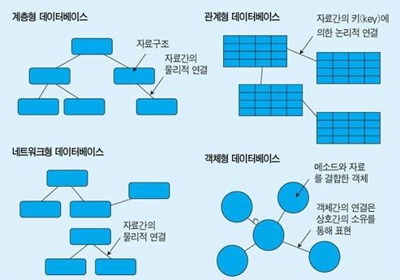
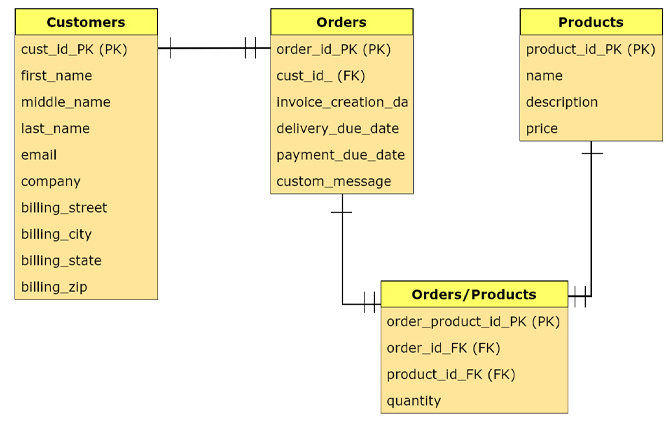
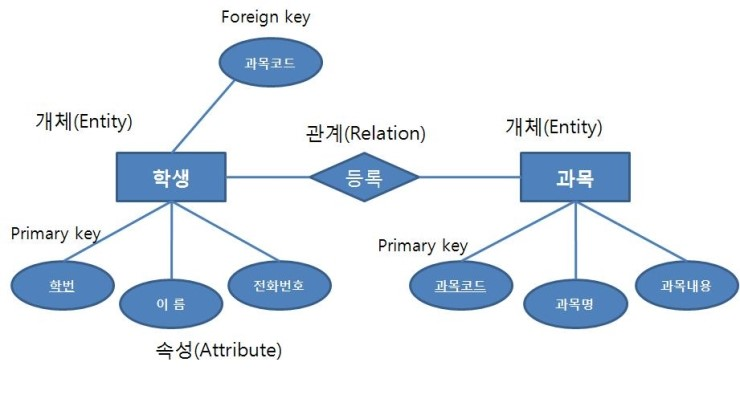

데이터베이스는 구조화된 정보 또는 데이터의 조직화된 모음으로서 일반적으로 컴퓨터 시스템에 전자적으로 저장됩니다.
데이터베이스는 일반적으로 데이터베이스 관리 시스템(DBMS)에 의해 제어됩니다.
연결된 애플리케이션과 함께 데이터와 DBMS를 하나로 묶어 데이터베이스 시스템, 단축하여 데이터베이스라고 합니다.

개체-관계 다이어그램이라고도 하며 말로 되어 있는 요구사항을 분석하여 그림으로 그려내어 그 관계를 도출한 다이어그램을 말한다.
즉, ERD는 엔티티(entity) 간의 관계(relationship)를 도표(diagram)로 표시한 그림이다.

